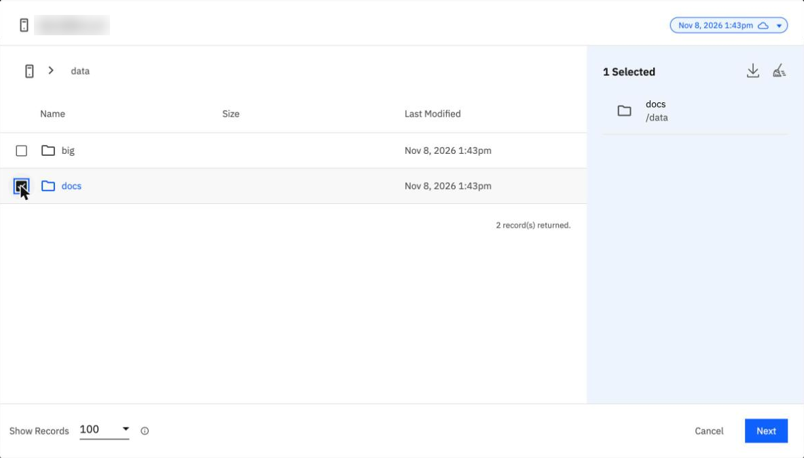
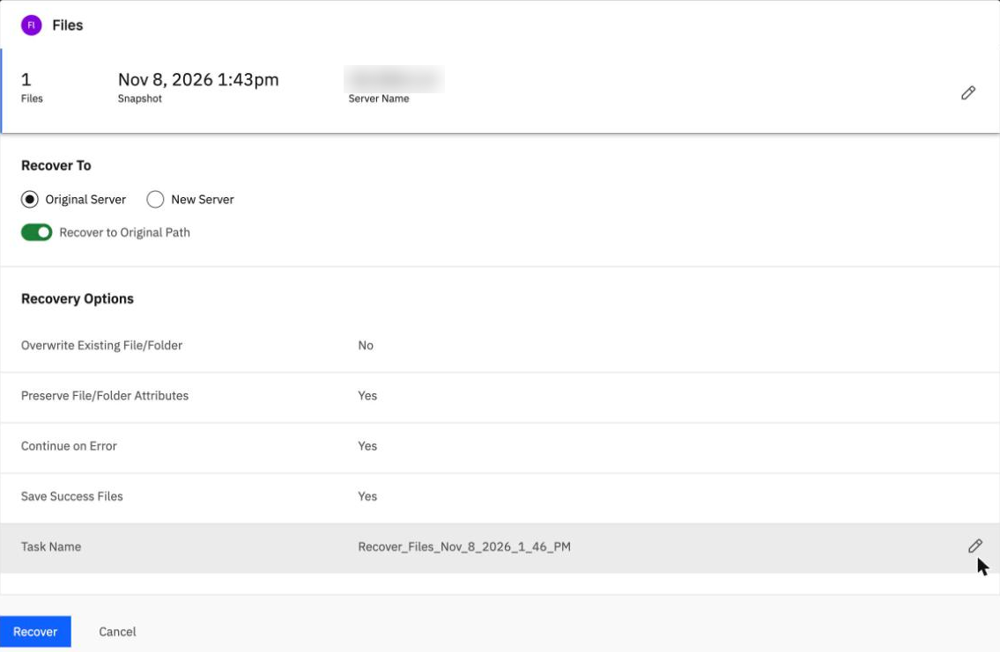
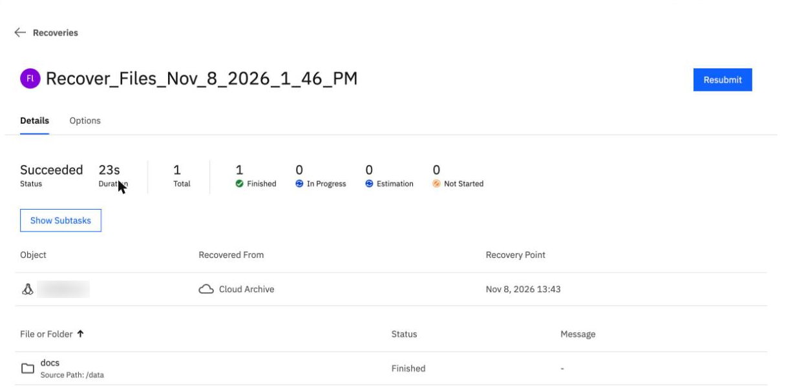

Restore files and check every one
By the end you can restore a deleted folder from a backup, say how long it takes, and prove that every file came back.
Northgate Freight is a made-up company. It backs up the folder /data on a Linux server. Today it deletes /data/docs on purpose, restores it and checks every file.
Every number and screen in this unit comes from real runs in our lab: 7 October 2026 for the command line and 8 November 2026 for the console. The server name is blurred in the screenshots.
Lose it, restore it, check it
The test has three parts. Northgate deletes the folder /data/docs, which holds 500 files, so that 3 files are left. It restores the folder to its original place. Then it checks every file against a checksum list.
Northgate deletes /data/docs and restores it. How does it know every file came back?
Show the answer
That is the proof that the backup works: every file is checked against the checksum list. In both runs the recovery ended Succeeded, and then 503 of 503 files matched.
Which backup does a restore read from?
Show the answer
In the console the file browser opens on the latest snapshot; the list at the top right picks another. On the command line you give the snapshot ID: archivalInfo.archivalTargetResults[0].snapshotId of the run you restore from.
How long does it take, and what is checked?
Northgate deletes /data/docs and restores it to its original place, overwriting. Then it runs the check.
How long does the restore take?
Show the answer
12 seconds on the command line, 23 in the console.Run Time Command line, connector server 12 s Command line, Connector Agent 12 s Console, 8 November 23 s
The two command-line runs were on 7 October 2026. Both showed 503 of 503 files matching.
In the console run, /data/docs held 505 files after the restore, but the checksum list holds 500 of them. Why?
Show the answer
The folder held 505 files: the 500 of the list and the 5 added later. The check read 503 of 503 OK.
Restore the folder
These screens come from the BRS console in our lab on 8 November 2026. Click where you would click. After two misses the right place is marked.

The file browser opened on the latest snapshot, inside data. You want to restore only the docs folder. Where do you tick it?
Show where
Right. Tick the box beside docs. The panel on the right then reads 1 Selected, docs, /data. Click Next.

Where does the console show whether existing files are overwritten?
Show where
Right. Overwrite Existing File/Folder is No by default. The command-line body in our lab run sets it to true. The folder was gone, so nothing needed overwriting. Recover To is Original Server with Recover to Original Path on. Click Recover.

The recovery has finished. Where does it say how long it took?
Show where
Right. Duration says 23s. The status is Succeeded, the data came from Cloud Archive and docs is Finished. In our lab on 8 November, the check then gave 503 of 503 OK.
A request that is turned down
Northgate writes the restore as a command-line request. The first try is rejected with this message.
recoveryAction: RecoverFilesAndFolders rejected: recoveryAction in body should be one of [RecoverPhysicalVolumes InstantVolumeMount RecoverFiles RecoverSystem RecoverSnapshotToView]
What does Northgate change?
Show the answer
The message lists the allowed values, and RecoverFiles is one. The command-line body in our lab run uses it.
In the console, Overwrite Existing File/Folder says No. Does the restore of the deleted folder still work?
Show the answer
In our lab the console restore succeeded in 23 s with the default No. The folder was gone, so nothing needed overwriting.
Not covered. We did not test a restore of a single file or a restore to a different path. A restore to a different server is unit 4.4.
Three questions
What is the proof that a restore worked?
Show the answer
Delete a folder, restore it, and check every file against the checksum list. This is the proof that the backup works.
The command-line restore is rejected with "recoveryAction in body should be one of [...]". What do you change?
Show the answer
The message lists the allowed values. The first try used RecoverFilesAndFolders, which is not one of them.
Review from unit 3.2. Two runs in the console both say Incremental. How do you tell which was the full backup?
Show the answer
The console labels the first run Incremental too. 92.6 MiB against 3 MiB tells them apart.
You can restore and prove it
Delete, restore, then check every file against the checksum list: 503 of 503 matched in our lab. The restore took 12 s on the command line and 23 s in the console.